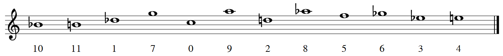
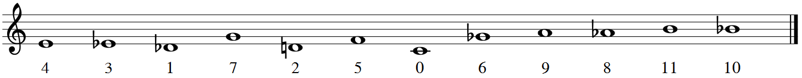

En las siguientes entregas de Divulgamat tendremos a una autora invitada, Celia Rubio, quien ha escrito una serie sobre el serialismo y matemáticas. Celia Rubio está cursando el doble grado de Matemáticas e Informática en la Universidad Complutense de Madrid y tiene estudios de música en el Conservatorio de Madrid (su instrumento es la flauta de pico, y además ha estudiado canto). Participó muy activamente en el congreso Mathematics and Computation in Music 2019 (véanse las columnas [9, 8]). Su preocupación e interés por la Teoría Matemática de la Música y su divulgación le empujó a mostrarme su texto. Tras leerlo detenidamente y atestiguar su calidad, le propuse enseguida su publicación en esta columna. El lector disfrutará sin duda alguna de la claridad y la fuerza del texto.
Este artículo es el primero de una colección sobre el serialismo musical y las matemáticas que lo fundamentan. Las músicas serialistas son aquellas que permiten construir castillos con un solo grano de arena: una serie particular, una permutación de notas, dinámicas o timbres. La serie se coloca en la obra secuencialmente, siempre igual o con alguna modificación que la adorne. Y es que para esta música, la serie es el ladrillo y las matemáticas son la pintura con la que decorarlos, ya que las transformaciones que se le puede aplicar a una serie forman preciosas estructuras matemáticas enmarcadas en la Teoría de Grupos.
En estas estructuras se centrará esta serie de artículos, y más específicamente en el dodecafonismo, el primer sistema compositivo serialista. En este primer artículo hablaremos sobre sus orígenes (sección 2) y sobre los postulados matemáticos que lo definieron (sección 3), y analizaremos una obra como ejemplo (sección 4). Más adelante generalizaremos las definiciones dodecafónicas matemáticamente, descubriremos la historia del serialismo integral y contaremos el número de posibles series distintas —o, más bien, de espectros seriales— que un compositor puede utilizar. En definitiva, haremos un recorrido a fondo por el serialismo y exploraremos sus posibilidades musicales y matemáticas.
Los textos irán dirigidos tanto a matemáticos como a músicos; en todas las entregas habrá secciones más matemáticas y secciones más musicales o históricas. Las matemáticas serán avanzadas, pero siempre se definirá todo lo que se utilice y se probará todo lo que se afirme. Algunas de las definiciones matemáticas más comunes se encuentran en la sección 5. ¡Que empiece el viaje!
En esta sección describiremos cuál fue el ambiente histórico y musical en el que se cultivó el primer modelo de serialismo musical: el dodecafonismo. A través de su historia analizaremos por qué el serialismo no fue una decisión aleatoria ni espontánea, sino que surgió de una necesidad estética de aquel periodo. Vamos a comenzar con una breve crónica de la disonancia, tras lo cual describiremos las fases por las que el creador del dodecafonismo, Arnold Schoenberg, tuvo que pasar antes de concebirlo.
La disonancia siempre ha formado parte de la experiencia musical. Con la música ha venido siempre emparejada la disonancia, mano a mano, como instrumento de contraste, confrontación y ruptura, pero también como elemento constructivo del discurso musical.
En la Antigua Grecia, la armonía musical se consideraba unida al resto del universo. La rotación de los astros emitía sonidos armónicos, y era la armonía la que apaciguaba el alma. Pero ¿qué era la armonía sino la unión de consonancia y disonancia? Como dijo Aristóteles:
El alma es armonía porque la armonía es mezcla y síntesis de contrarios, y de
contrarios precisamente está compuesto el cuerpo.
(Tomado de [3] J. de Aixquivel, Memorias de Historia Antigua, 1989.)
Es bien sabido que la Escuela de Pitágoras, con su estudio sobre proporciones entre notas, buscaba encontrar cuáles eran los intervalos más consonantes: eran aquellos cuya proporción formaba una relación sencilla. El intervalo de octava era consonante porque su ratio era de 2:1, y de igual manera ocurría con los intervalos de quinta (3:2) y cuarta (4:3), a los que Aristóxeno comenzó a llamar sýmphnos (σμφωνoς) [6]. En cambio, a los intervalos no tan sencillos se los llamaba diáphnos (διφωνoς), y fue entonces cuando se le dio nombre a la disonancia.
Ya en la Edad Media, la polifonía fue forjando normas sobre su uso. La primera regla compositiva de la música occidental —según Knud Jeppesen [11]— fue la regla franconiana, que expresaba que las disonancias debían ocurrir en la parte débil del compás, mientras que las consonancias en la parte fuerte. Es así como los compositores trenzaban consonancia y disonancia al tejer los hilos de la música.
Poco a poco la disonancia pasó a ser usada como floritura melódica: en notas de paso, apoyaturas o retardos, entre otras. Esta función melódica fue impregnando el contrapunto hasta llegar a ser pieza clave en la continuidad y el enlace de las voces. Adquirió entonces una nueva función contrapuntística. ¿Quién no se ha deleitado al escuchar una disonancia bachiana?
Pero la disonancia estaba aún circunscrita a la tonalidad reinante. No fue hasta la introducción de acordes extraños que la disonancia pasó a ser el centro del interés musical, y fue in crescendo apropiándose del foco de atención hasta llegar a ser más valiosa aún que la consonancia. Para ello hubo que esperar hasta el siglo XIX, que fue testigo de un asombroso desarrollo del sistema armónico que acabó por quebrantar todas las concepciones musicales anteriores.
Para más información sobre la disonancia y su fascinante historia, recomendamos al lector el texto de Felipe Aguirre [1].
Aunque las posibilidades que prometía la tonalidad parecían inagotables, sus límites comenzaron a percibirse hacia finales del siglo XIX. En palabras de Arnold Schoenberg:
El oído se fue familiarizando gradualmente con gran número de disonancias, hasta que
llegó a perder el miedo a su efecto perturbador.
Mencionado en [13] Composition with twelve tones, de Style and Idea, 1950.
Esta época culminó con los dramas musicales de Richard Wagner, en los que todos los elementos de la obra estaban detalladamente estudiados por el compositor. A este concepto lo llamaba Gesamtkunstwerk (“obra de arte total”) —mencionado en [15] Oper und Drama, 1851—, ya que se aseguraba personalmente de que en sus óperas las artes escénicas, musicales, poéticas y visuales se combinaran entre sí a la perfección.
La idea del Gesamtkunstwerk la desarrolló alrededor de 1850, y la plasmó en su totalidad en su ciclo de cuatro óperas Der Ring des Nibelungen, estrenado en 1876. Wagner controló y creó cada aspecto de la tetralogía, desde la música hasta el libreto, el vestuario y la escenografía. Incluso mandó crear su propia sala de conciertos en Bayreuth, el Festspielhaus, para que el escenario se adecuara a sus ideas sobre el pensamiento y la cultura musical; véase [12] para más detalles.
Así, a ojos de compositores posteriores, se habían agotado todas las posibilidades de la música tonal, y quizás ya había comenzado el viraje hacia el predominio de la disonancia con su abundante uso del cromatismo, como en el famoso primer acorde del drama musical Tristan und Isolde (1865). Consta de las notas fa-si-re#-sol#, y sus intervalos desde el fa son una cuarta aumentada, una sexta aumentada y una novena aumentada.
Después de Wagner, otros compositores también estuvieron a las puertas de emancipar la disonancia, de desatarla de las ataduras que imponía la tonalidad. Por ejemplo, el gran compositor Gustav Mahler conseguía reflejar en sus sinfonías dos realidades paralelas: tanto la delicada fragilidad de la tradición anterior como la inminencia de su ruptura. El ejemplo más claro es el Adagio de su Décima Sinfonía, que contiene una disonancia con once de las doce notas de la escala cromática. Y es que, sin lugar a dudas, ya se preveía que la tonalidad iba a reemplazarse.
Siguiendo la concepción del progreso como un camino ascendente, el paso siguiente para la composición musical debía consistir en deshacerse progresivamente de la tonalidad y desarrollar la “emancipación de la disonancia” —mencionado también en [13] Composition with twelve tones—. Así, en el marco expresionista del cambio de siglo, fue como Arnold Schoenberg ideó sus teorías del pensamiento musical, y éstas dieron paso a la creación de la atonalidad.
Fuertemente influido por Wagner y Mahler desde su adolescencia, Schoenberg comenzó componiendo al estilo posromántico de su época, llevando el cromatismo y la orquestación hasta el extremo. Sin embargo, y no espontáneamente, empezó a buscar en sus composiciones que cada sonido tuviera valor por sí mismo, un valor independiente de su funcionalidad tonal.
Para él, la música no estaba intrínsecamente dirigida a una tónica. En las progresiones, lo importante era el paso de un acorde a otro, y no hacia dónde se dirigían estos. Además, él opinaba que se debían poder utilizar las notas de los modos eclesiásticos libremente, por lo que consideraba las notas no diatónicas tan válidas como las diatónicas. Esto hacía imposible distinguir unas de otras, y apenas se podía identificar la tónica. De esta, y de otras muchas formas, Schoenberg conseguía que la jerarquía tonal quedara desestabilizada [12].
De esta época es su primera obra importante, Verklärte Nacht (Noche transfigurada), Op. 4. Compuesto en 1899, este sexteto de cuerdas está inspirado por el poema homónimo de Richard Dehmel. La música, según su autor, expresa el paseo de un hombre y una mujer en medio de la naturaleza. Aunque en la obra aún prevalece la armonía tradicional basada en acordes, Schoenberg sitúa al oyente en un terreno de indefinición tonal, no sólo en el plano armónico sino también en el melódico. Además, hace uso del acorde de novena invertido, inexistente hasta entonces y, por tanto, rechazado por la crítica [5].
Tras pasar por la etapa tonal post-romántica, y debido a su convicción en la inexorabilidad de la evolución de la música hacia el cromatismo total, en 1908 Schoenberg se desligó de la tonalidad completamente con el ciclo de canciones Das Buch der Hängenden Gärten.
A partir de entonces se dedicó a componer fragmentos muy breves cuya estructura era definida por motivos y no por la armonía. Era esto lo que solía ocurrir en formas musicales anteriores como la forma sonata. A este periodo en sus composiciones se le llama atonalidad libre, aunque cabe destacar que Schoenberg rechazaba fervientemente este término:
La expresión “música atonal” es de lo más desafortunada —es como llamar a volar “el
arte de no caer” o a nadar “el arte de no ahogarse”.
Mencionado en [14] A. Schoenberg, Hauer’s Theories, en Style and Idea, 1923.
A este periodo pertenece también su famoso ciclo de canciones Pierrot Lunaire, Op. 21 (1912). Su nombre completo es Tres veces siete poemas de Pierrot Lunaire de Albert Giraud, ya que está dividida en 3 grupos de 7 canciones cada uno, cuyos textos son una selección de 21 poemas del ciclo homónimo de Albert Giraud.
Se encuentran en ella abundantes referencias al número 7. Schoenberg hace un uso extensivo de motivos de 7 notas a lo largo de la obra, mientras que el conjunto musical que la interpreta, incluyendo al director, consta de 7 miembros. De hecho, a este conjunto de instrumentos —flauta, clarinete, violín, violonchelo, piano y voz— se le ha dado el nombre de ensemble Pierrot en su honor. Otros números importantes en la obra son el 3 y el 13. Cada poema consta de 13 líneas, mientras que la primera línea de cada poema aparece 3 veces, en las líneas 1, 7 y 13.
En esta obra no sólo hay una ausencia total de relaciones tonales, sino que el tratamiento vocal evita también cualquier relación estética con las técnicas tradicionales: es un Sprechgesang, un canto hablado. De hecho, Schoenberg se refiere a estas piezas no como canciones, sino como melodramas. Véase [5] para más información.
Schoenberg no estaba aún satisfecho con su técnica compositiva, ya que admiraba las obras extensas de los músicos románticos y pensaba que su atonalidad no podía sostener una obra de gran envergadura. Es decir, necesitaba un hilo conductor mejor que los motivos para poder componer obras atonales más largas.
Por aquella época sufrió crisis en varios aspectos de su vida. En lo personal, su mujer Matilde Zemlinsky acababa de abandonarlo por otro hombre, aunque posteriormente volvería junto al compositor. Y en lo profesional, sus obras no eran del gusto del público, por lo que no contaba con suficiente dinero para mantener a su familia. Todas estas circunstancias, unidas al desarrollo de la Primera Guerra Mundial, no le permitieron componer apenas entre 1914 y 1923.
Tras el final de la guerra, en 1919, Schoenberg fundó la Sociedad para Interpretaciones Musicales Privadas junto a sus discípulos y amigos Alban Berg y Anton Webern. Schoenberg, Berg y Webern se autodenominaron la Segunda Escuela de Viena en honor al grupo de compositores del siglo XVIII Haydn, Mozart y Beethoven, quienes formaban la Primera Escuela de Viena.
En la Sociedad para Interpretaciones Musicales Privadas se presentaban música contemporánea en circunstancias que favorecieran su adecuada apreciación. Así se evitaba que dichas obras, al no ser entendidas por el público, fueran inmediatamente rechazadas. Las obras de compositores como Mahler, Debussy, Bartók, Ravel, Strauss y Stravinsky se incluyeron en los programas de conciertos organizados por la Sociedad.
En este contexto Schoenberg pudo reflexionar sobre sus técnicas compositivas, y al fin publicó en 1923 su ensayo Método de composición con doce sonidos [13], donde se describían por primera vez los axiomas del dodecafonismo. Estos axiomas constituían la solución al problema de la atonalidad libre que tanto le había estado atormentando durante una década.
Su primera obra íntegramente dodecafónica, publicada también en 1923, es la Suite para piano Op. 25, que podrán ver a continuación. Es la pieza más temprana en la que Schoenberg usa series dodecafónicas en cada uno de los movimientos. En dos obras anteriores a ella usa series dodecafónicas, pero en movimientos aislados: la Op. 23, 5 Stücke (1920—23), en el movimiento de Waltz final; y su Serenata, Op. 24, en su Soneto central.
Las series utilizadas en la Suite Op. 25 servirán de ejemplo en este texto, y su tercer movimiento, Musette, será estudiado y analizado en el apartado 4.3 con el fin de entender una obra dodecafónica en toda su extensión. A continuación el lector podrá escuchar la Suite para piano Op. 25:
https://www.youtube.com/watch?v=39x0Ypi4gTc
El dodecafonismo es un sistema compositivo que predetermina la melodía y la armonía a partir de una ordenación de las doce notas de la escala cromática, que se llama serie. Esta y algunas de sus transformaciones son los ladrillos con los que se construyen las alturas de las notas; son el único material que se puede utilizar. El resto de elementos de la pieza, como el número de instrumentos, el ritmo, el carácter, la textura o las dinámicas, se deja a discreción del compositor. No serializar todos los conjuntos será la principal crítica al dodecafonismo por parte de los compositores serialistas que sucedieron a su creador, Arnold Schoenberg. Para los serialistas integrales, como Pierre Boulez, aquello restaba cohesión al modelo compositivo; para los dodecafonistas, aportaba libertad [2].
Precisamente la predeterminación dodecafónica, aunque parece limitante, permite realizaciones musicales y estilos de composición muy diferentes: Schoenberg daba un tratamiento tradicional a sus obras, ya que aun admiraba las formas clásicas; Alban Berg iba más allá al utilizar series que recordaban a las tríadas tonales; y, en cambio, Anton Webern evitaba radicalmente cualquier asociación con la tradición.
Schoenberg definió su sistema musical a partir de cuatro postulados que, en realidad, se basan en principios matemáticos [4]:
Los dos primeros postulados expresan que una obra dodecafónica fundamenta su estructura sobre una permutación de la escala de doce semitonos. Dicha permutación σ es una biyección del conjunto numerado de las doce notas {Do = 0, Do# = 1, Re = 2, Re# = 3, Mi = 4, Fa = 5, F# = 6, Sol = 7, Sol# = 8, La = 9, La# = 10, Si = 11} consigo mismo, y se representa de esta forma:

La permutación σ(m), con m ∈ ℤ∕(12), pertenece al grupo simétrico de orden 12, S12. Por ejemplo, en la Suite para piano Op. 25 Schoenberg utiliza como serie original en todos los movimientos de la obra la siguiente permutación σ:

Los otros dos postulados restantes son:
Los dos últimos postulados amplían los recursos compositivos al admitir la transformación de la serie original mediante inversión, retrogradación, inversión retrógrada y transposición. El compositor puede utilizar cualquiera de las transformaciones de una serie al componer su obra dodecafónica. El conjunto de series que puede utilizar, que viene dado por la serie original y todas sus posibles transformaciones, se conoce como espectro serial; veáse [4] para más información.
Transformar una serie es matemáticamente equivalente a aplicar una función sobre la serie, y que asocie esa permutación a la permutación transformada. Por tanto, cualquier función Ψ se aplica sobre el conjunto de las permutaciones, S12.
La transposición, mencionada en el cuarto postulado, consiste en subir o bajar la serie original un número determinado de semitonos. Por tanto, no se modifican los intervalos entre las notas, sino solamente la altura a la que está la serie. Ya que consideraremos todas las octavas equivalentes, debemos trabajar módulo 12.
La serie transportada k semitonos (con k constante), Tk(σ), se construye sumando k a σ (mod. 12):
A su vez, Tk se forma al componer k transposiciones de 1 semitono: Tk = T1 ∘ T1 ∘… ∘ T1, k veces. Debido a que k es en realidad el exponente en la potencia de T, se coloca este número como superíndice.
Históricamente, la notación Ψk, Ψk o también Ψ(k) se ha usado en sustitución de la composición de la transposición Tk y otra función Ψ, en el respectivo orden: Ψk = Ψ ∘ Tk = Ψ(Tk). Sin embargo, esta notación es especialmente ambigua y confusa, sobre todo al trabajar con funciones no conmutativas —cuando importa el orden en el que estén T y Ψ—. Por ello, es preferible ceñirse a la notación estrictamente matemática; es decir, a la composición de funciones, aun omitiendo el símbolo ∘, de esta manera: ΨTk.
Una posible serie transportada sobre la permutación σ de la Suite para piano Op. 25, con k = 6, es la siguiente serie T6:

La retrogradación consiste en leer la serie original desde la nota final hacia atrás, es decir, aplicar a la serie una simetría especular. De este modo, la primera nota irá al último puesto, la segunda al penúltimo, y así sucesivamente. La serie retrógrada se construye según la siguiente fórmula:
La serie retrógrada sobre la permutación σ de la Suite Op. 25 es la siguiente serie R:
La inversión consiste en cambiar la dirección —de ascendente a descendente y viceversa— de los intervalos entre cada nota de la serie. Si el primer intervalo en la serie original σ es de +k, el primer intervalo en la serie invertida I será de -k (siempre módulo 12), por lo que debemos cambiar el signo de σ para construir I. Además, queremos que la primera nota de ambas series, I(σ(0)) y σ(0), coincidan, así que debemos transportar la serie (-σ) un número λ de semitonos para que esta condición se cumpla:
| I(σ(0)) = -σ(0) + λ | = σ(0)λ = 2σ(0) |
La serie invertida sobre la permutación σ de la Suite Op. 25 es la siguiente serie I:

En total, obtendremos 48 series – aunque no obligatoriamente distintas entre sí – pertenecientes a un solo espectro serial. Hay 12 series originales sobre cada una de las doce notas, 12 series retrógradas, 12 invertidas y 12 series sobre las que se aplica tanto la retrogradación como la inversión. A continuación se muestra la sintaxis simple junto a la matemática:
Sintaxis simple
T0, T1, T2…
R0, R1, R2…
I0, I1, I2…
IR0, IR1, IR2…
Sintaxis matemática
T0, T1, T2…
R, RT1, RT2…
I, IT1, IT2…
IR, IRT1, IRT2…
Dada una serie, su matriz dodecafónica es una representación visual de su espectro serial; es decir, del conjunto de series derivadas de esa serie. El espectro serial es todo el material compositivo sonoro del que se dispone para la composición de una obra dodecafónica. Al poder ordenar y disponer la información en una tabla, el compositor puede acceder a toda ella al mismo tiempo sin tener que calcular cada serie individualmente.
La matriz se lee en la dirección en la que aparece el nombre de la serie. Las series T se leen de izquierda a derecha, mientras que las series R de derecha a izquierda. Las series I se leen de arriba a abajo y las IR∕RI de abajo a arriba.
He creado un programa que devuelve en formato LATEX la matriz correspondiente a cualquier serie dodecafónica que se introduzca en teclado, además de producir la nomenclatura simple para cada serie. El código, escrito en C++, se puede encontrar en el enlace https://gitlab.com/dodecafonismo/cppmatrices.
A continuación, se incluye la matriz dodecafónica de la serie P de la Suite Op. 25 de Schoenberg. Mientras que la mayoría de tablas tienen dos filas inferiores, que se corresponden con las distintas nomenclaturas de RI e IR para una misma serie —ya que normalmente no conmutan—, en la matriz de la serie P sí coinciden.
![| |
-----|-I0----I1----I3----I9---I2----I11---I4----I10----I7---I8----I5---I6--|-----
T0 | 4 5 7 1 6 3 8 2 11 0 9 10 | R0
T11 | 3 4 6 0 5 2 7 1 10 11 8 9 |R11
T9 | 1 2 4 10 3 0 5 11 8 9 6 7 | R9
T3 | 7 8 10 4 9 6 11 5 2 3 0 1 | R3
T10 | 2 3 5 11 4 1 6 0 9 10 7 8 |R10
T | 5 6 8 2 7 4 9 3 0 1 10 11 | R
1 | | 1
T8 | 0 1 3 9 2 11 4 10 7 8 5 6 | R8
T2 | 6 7 9 3 8 5 10 4 1 2 11 0 | R2
T5 | 9 10 0 6 11 8 1 7 4 5 2 3 | R5
T4 | 8 9 11 5 10 7 0 6 3 4 1 2 | R4
T7 |11 0 2 8 1 10 3 9 6 7 4 5 | R7
T6 |10 11 1 7 0 9 2 8 5 6 3 4 | R6
-----|IR0--IR1---IR3--IR9---IR2--IR11--IR4---IR10--IR7---IR8--IR5---IR6-|-----
-----|------------------------------------------------------------------|-----
|RI0 RI1 RI3 RI9 RI2 RI11 RI4 RI10 RI7 RI8 RI5 RI6 |](Serialismo-matematicas14x.png)
Por otro lado, he escrito un comando en el propio lenguaje LATEX que crea esta misma tabla con el comando \dmatrix, y tiene cualquier serie como argumento:
El comando se encuentra en el paquete de LATEX ddphonism, disponible en el enlace https://www.ctan.org/pkg/ddphonism. La tabla aparece sin el orlado de nomenclaturas:
| 4 | 5 | 7 | 1 | 6 | 3 | 8 | 2 | 11 | 0 | 9 | 10 | |
| 3 | 4 | 6 | 0 | 5 | 2 | 7 | 1 | 10 | 11 | 8 | 9 | |
| 1 | 2 | 4 | 10 | 3 | 0 | 5 | 11 | 8 | 9 | 6 | 7 | |
| 7 | 8 | 10 | 4 | 9 | 6 | 11 | 5 | 2 | 3 | 0 | 1 | |
| 2 | 3 | 5 | 11 | 4 | 1 | 6 | 0 | 9 | 10 | 7 | 8 | |
| 5 | 6 | 8 | 2 | 7 | 4 | 9 | 3 | 0 | 1 | 10 | 11 | |
| 0 | 1 | 3 | 9 | 2 | 11 | 4 | 10 | 7 | 8 | 5 | 6 | |
| 6 | 7 | 9 | 3 | 8 | 5 | 10 | 4 | 1 | 2 | 11 | 0 | |
| 9 | 10 | 0 | 6 | 11 | 8 | 1 | 7 | 4 | 5 | 2 | 3 | |
| 8 | 9 | 11 | 5 | 10 | 7 | 0 | 6 | 3 | 4 | 1 | 2 | |
| 11 | 0 | 2 | 8 | 1 | 10 | 3 | 9 | 6 | 7 | 4 | 5 | |
| 10 | 11 | 1 | 7 | 0 | 9 | 2 | 8 | 5 | 6 | 3 | 4 |
También he creado una página interactiva que genera matrices de cualquier serie para cualquier longitud serial, además de generar series aleatorias. Permite escoger entre dos numeraciones y dos nomenclaturas. Está escrita en Elm y el código puede encontrarse en https://gitlab.com/dodecafonismo/matrices.
En este enlace se encuentra la aplicación web. Sus instrucciones de uso se encuentran al final de la página: https://matrices.netlify.com/.
Lo primero que hará un compositor dodecafónico antes de empezar a componer será escoger su serie original. Su elección nunca es una simple cuestión de azar; al contrario, ya que las singularidades de la serie darán un carácter especial a toda la obra. Por ejemplo, el compositor puede escoger una serie con simetrías, y así tendrá series repetidas entre su espectro serial. También puede tener simetrías internas solo en un fragmento de tres o cuatro notas, y de este modo podrá el compositor oscilar entre varias series del espectro que se parezcan entre sí. Para un estudio más completo de las relaciones de similitud entre series se recomienda On the Similarity of Twelve-Tone Rows, de Tuukka Ilomäki [10].
En la Suite para Piano Op. 25, Schoenberg escoge su serie σ para resaltar el intervalo de tritono (6 semitonos). A continuación se observan en negrita los intervalos entre las notas de esta serie, en unidad de semitono:
Presenta repeticiones triples de los intervalos de tritono (6), de sexta mayor (9) y de segunda menor o semitono (1): los intervalos más disonantes; una repetición doble de cuarta justa (5), y un intervalo de segunda mayor (2); además de una consecución de intervalos repetida: 9–1–9–1. Como se forma el intervalo de tritono al enlazar la serie original con una serie que empiece por la misma nota, se tiene en cuenta el intervalo de tritono (6) al final. En el dodecafonismo se evitan deliberadamente los intervalos de tercera mayor (4), ya que estos son la base de la eludida armonía tonal.
El intervalo de tritono tiene la particularidad de no modificarse en la inversión y transportación k = 6, por lo que estos intervalos aparecen en los lugares originales, mientras que en los procedimientos de retrogradación y retrogradación inversa ocupan sus lugares en retrógrado. En particular, Schoenberg utiliza entre los seis movimientos de la Suite solamente las ocho series de todo el espectro serial que cumplen estos requisitos: T0, T6, I, IT6, R, RT6, RI y RIT6, que podemos observar a continuación:


Estas series tienen muchos elementos en común: todas comienzan o acaban por mi♮ o por si♭, lo que permite enlazar unas series con otras por medio del unísono o del tritono; se mantienen los intervalos de tritono en sus lugares originales o retrógrados, y coinciden en las dos primeras y las dos últimas notas dos a dos.
Se han realizado estudios – como el de Martha Hyde [7] – en los que se limitan las series utilizadas en la Suite a cuatro: T0, T6, I e IT6, pero ya que el objetivo de este texto no es analizar la obra entera se dejará esta cuestión para análisis posteriores.
Schoenberg realiza en la serie σ una partición triple; es decir, la serie se divide en tres tetracordos, y cada uno de ellos contiene un intervalo de tritono. El último tetracordo, si se retrograda, consta de las notas 10–9–0–11, que en notación germánica es la secuencia BACH. Esto puede ser un homenaje al compositor Johann Sebastian Bach (1685—1750), ya que Schoenberg admiraba a los grandes compositores anteriores a él por las estructuras formales de sus obras. Para más información, véase [16].
Otro posible homenaje a Bach y sus contemporáneos barrocos es precisamente la forma de la obra: es una suite, género cultivado durante los siglos XVII y XVIII que se compone de una variedad de danzas. La Suite de Schoenberg está formada por seis danzas: un preludio, una gavota, una musette, un intermezzo —que no tiene influencia barroca sino más bien de Brahms, otro modelo para Schoenberg—, un minueto con trío y una giga. Además, el estilo, la textura —contrapuntística, típicamente barroca— y la estructura de cada danza se corresponden con los estilos, texturas y estructuras de las danzas homónimas del periodo bachiano.
Por ser ésta su primera obra totalmente dodecafónica, Schoenberg la utilizó como una muestra al mundo de las posibilidades de su nuevo método compositivo. Fue también por lo que tomó un formato tan variado como una suite: así podía en una misma obra componer con estilos tan distintos como los de las distintas danzas.
Al componer la obra, Schoenberg trata cada tetracordo como una subunidad individual. Los superpone contra otras series del espectro también divididas, o utiliza sus notas como un solo acorde cuatríada. Estas divisiones no sólo sirven para hacer la serie más reconocible o añadir cohesión a la obra, sino que además facilitan el desarrollo de la serie específicamente en el estilo de cada danza.
En el tercer movimiento de la Suite, la Musette, Schoenberg recrea la danza barroca que toma su nombre del instrumento homónimo: la cornamusa, de la familia de la gaita. La música compuesta para estos instrumentos suele consistir en una melodía acompañada por una nota pedal, que se traduce aquí en la presencia de un bordón sobre el sol♮ (nota 7). Esta nota se extrae de cada una de las series utilizadas y se forma con ella un ostinato rítmico en la mano izquierda del piano. Con el resto de sonidos de cada serie, Schoenberg vuelve a emular el estilo de la danza barroca y articula un discurso polifónico a dos voces con ritmos esencialmente cortos.
A partir de la doble barra del compás 9, el re♭ (nota 1) acompaña a sol♮ y ambos crean un doble bordón en la mano izquierda. La elección de esas dos notas está estrechamente relacionada con la tradicional relación de quinta justa formada por sol♮ y re♮ en la música tonal. Schoenberg sustituye las quintas justas tonales por los tritonos dodecafónicos, subrayando aún más su emancipación de la disonancia.
Además de las similitudes texturales, rítmicas y armónicas, la Musette de Schoenberg comparte estructura formal con las danzas barrocas. Y esta semejanza es quizás la más notable, ya que fue la búsqueda de estructura formal lo que inspiró a Schoenberg a desarrollar su método compositivo. La Musette barroca, como todos los movimientos de danza, presenta una estructura binaria con simetría tonal: empieza y acaba por la misma tonalidad, mientras que el centro es zona de desarrollo. Schoenberg despoja de funcionalidad tonal a esa simetría, madre de la forma sonata, y la aplica a su composición dodecafónica.
En este movimiento se pueden diferenciar a simple vista tres secciones, divididas en los compases 9 y 20, debido a cambios de textura, figuración y tempo. En la segunda sección se le añade melodía a la mano izquierda del piano, dejando más camuflado el bordón que en la primera sección, además de que éste se vuelve doble, mientras que vuelve a aparecer claramente en la tercera sección. También en la segunda sección aparece una nueva figuración, que es la semicorchea; y, por último, en los dos compases de división aparecen dos a tempo, que marcan el final de las dos primeras secciones tras dos zonas de variabilidad rítmica.
Para que esta estructura tríptica sea una forma binaria, la primera y la última parte deben mantener un parecido, que se observa a través del análisis de las series utilizadas en el movimiento. Estas series son T0, T6, I e IT6.
En la Musette, Schoenberg hace un uso casi absoluto de la tripartición serial, hasta el punto de individualizar los tetracordios por separado y concederles privilegios seriales, como la retrogradación. Por ejemplo, en el compás 7, en la voz inferior de la mano derecha aparece el tetracordio 4–5–2–3, que es o bien el primer tetracordio de RIT6 o la retrogradación del tercer tetracordio de IT6, mientras que los otros dos tetracordios de IT6, 10–9–71 –1 en la voz superior y 8–11–6–0 en la mano izquierda, aparecen en el orden correcto. Entonces no se puede analizar el compás como RIT6, sino indicar que hay una alteración puntual de IT6.
Por tanto, es muy complicado analizar esta obra en su totalidad, ya que la flexibilidad en la ordenación de los tetracordios puede generar situaciones muy ambiguas. Debido a estas fragmentaciones y a las variadas combinaciones de tetracordios originales y retrógrados, se escucha un área de desarrollo hacia la sección media del movimiento. En cambio, las series al principio y al final de la pieza se presentan casi íntegramente, como una exposición y reexposición. He aquí un vínculo con la simetría de las formas binarias tonales.
Es más, incluso el orden de las series utilizadas en la primera y en la última sección coinciden, exceptuando dos repeticiones consecutivas y las series T0 finales, que actúan como una cadencia serial:
A continuación se encuentra el análisis serial completo de la Musette:
[1] Felipe Aguirre. El concepto de “disonancia” en Adorno y en la nueva música. http://www.felipeaguirre.co/blog/2019/1/28/el-concepto-de-disonancia-en-adorno-y-en-la-nueva-musica, Enero de 2019. Consultado en agosto de 2019.
[2] Pierre Boulez. Schoenberg is dead. http://www.ubu.com/papers/Boulez-Schoenberg+Is+Dead.pdf, 1952. Publicado en la revista The Score originalmente; consultado en línea en agosto de 2019.
[3] J. de Aixquivel. Memorias de Historia Antigua. Universidad de Oviedo, 1989. https://books.google.es/books?id=m6zZrpltkzYC.
[4] Manuel Domínguez Romero. Las matemáticas en el serialismo musical. Sigma, 41(24):93–98, 2011. Accesible en http://www.hezkuntza.ejgv.euskadi.eus/r43-573/es/contenidos/informacion/dia6_sigma/es_sigma/adjuntos/sigma_24/6_Serialismo_musical.pdf.
[5] Alicia Díaz de la Fuente. Estructura y significado en la música serial y aleatoria. PhD thesis, Universidad Nacional de Educación a Distancia, Departamento de Filosofía, 2005. https://www2.uned.es/dpto_fim/publicaciones/alicia_1.pdf.
[6] World Heritage Encyclopedia. Consonance and dissonance. http://self.gutenberg.org/articles/eng/Consonance_and_dissonance, 2017. Consultado en agosto de 2019.
[7] Peter Farindon. Dodecaphonism: Schoenberg. In M. Everist and J. Dunsby, editors, Models of Musical Analysis: Early Twentieth-century Music, chapter 4, pages 45–60. Blackwell Pub, Oxford, Inglaterra, 1993. https://books.google.es/books?id=JSdVHAAACAAJ.
[8] Paco Gómez. Crónica del congreso Mathematics and Computation in Music 2019. http://vps280516.ovh.net/divulgamat15/index.php?option=com_content&view=article&id=18206:99-agosto-2019-cronica-del-congreso-mathematics-and-computation-in-music-2019&catid=67:ma-y-matemcas&directory=67, julio de 2019. Consultado en agosto de 2019.
[9] Paco Gómez. Mathematics and Computation in Music 2019: un congreso interdisciplinar. http://vps280516.ovh.net/divulgamat15/index.php?option=com_content&view=article&id=18184:98-junio-2019-mathematics-and-computation-in-music-2019-un-congreso-interdisciplinar&catid=67:ma-y-matemcas&directory=67, julio de 2019. Consultado en agosto de 2019.
[10] Tuukka Ilomäki. On the Similarity of Twelve-Tone Rows. https://helda.helsinki.fi/handle/10138/235041, 2008. Consultado en línea en agosto de 2019.
[11] Knud Jeppesen. Counterpoint: The Polyphonic Vocal Style of the Sixteenth Century. (The Prentice-Hall music series). Dover Publications, 1992. https://books.google.es/books?id=OcSVGkug58gC.
[12] James P. Kinney. Twelve-tone Serialism: Exploring the Works of Anton Webern. Master’s thesis, University of San Diego, University of San Diego, 2015. https://digital.sandiego.edu/honors_theses/1.
[13] Arnold Schoenberg. Composition with twelve tones. http://music.ucsc.edu/sites/default/files/14.SchoenbergTwelveTone.pdf, 1923. Publicado en Style and Idea.
[14] Arnold Schoenberg. Hauer’s Theories. https://books.google.cz/books?id=jbXtxJezk5cC, 1923. Publicado en Style and Idea.
[15] Richard Wagner. Oper und Drama. http://users.skynet.be/johndeere/wlpdf/wlpr0063.pdf, 1851.
[16] June Xiao. Bach’s Influences in the Piano Music of Four 20th Century Composers. PhD thesis, Jacobs School of Music, Universidad de Indiana, 2014. https://scholarworks.iu.edu/dspace/handle/2022/19212.